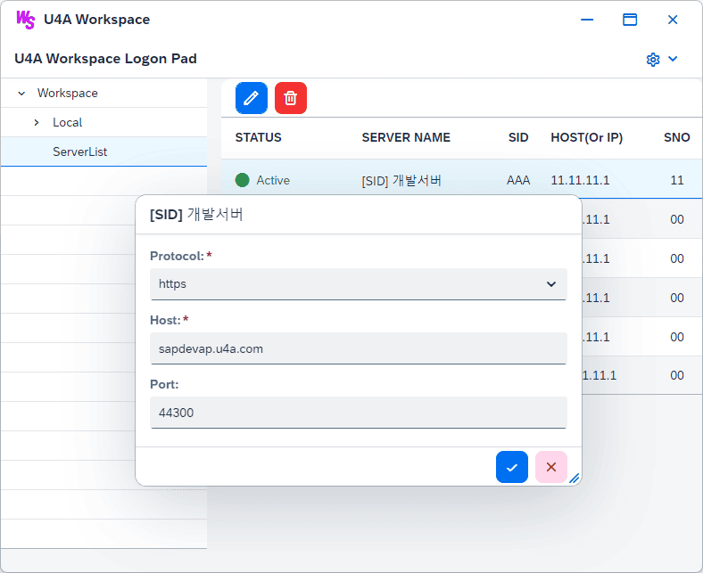
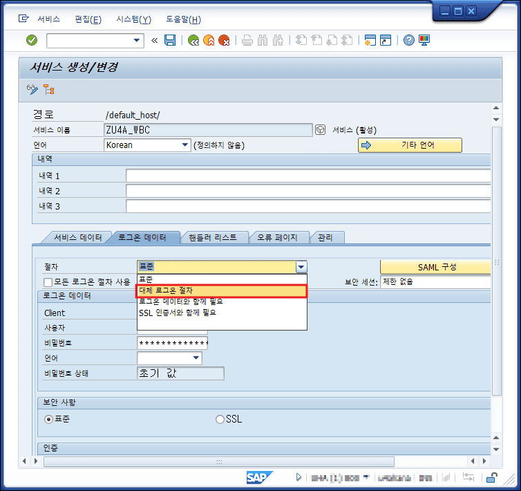

U4A Workspace(WS)에서 서버 로그인 오류 발생 시 확인 메뉴얼
접속 서버의 호스트 정보 확인
1. Workspace 에서 접속 서버 정보 확인

2. 등록한 접속 정보를 참고하여 브라우저에서 Webgui 등 서비스 실행하여 접속 여부 확인
예)
등록한 접속정보
- Protocol: "https"
- Host: "sapdevap.u4a.com"
- Port: "44300"
- 실행 URL:
https://sapdevap.u4a.com:44300/sap/bc/gui/sap/its/webgui
접속 대상 서버에 SSO(SAML2.0) 적용 여부 확인
1. SAPGUI로 접속 대상 서버에 로그인 후 T-CODE: "SICF" 입력하여 "서비스 정의" 화면 접속
2. "서비스 이름" 항목에 "ZU4A_WBC" 입력 후 실행
3. 조회된 화면에서 "ZU4A_WBC" 서비스 더블클릭
4. "서비스 생성/변경" 화면에서 "로그온 데이터" 탭 선택 후, 상단의 "변경" 버튼 선택
5. 전체 입력 항목이 활성화 된 후, "절차" 항목의 dropdown 선택하여 "대체 로그온 절차" 항목 선택

6. 화면 최하단의 "로그온 절차 리스트" 항목에서, "SAML 로그온" 항목이 있는지 확인한다.
7. 삭제해야 할 경우 아래 그림에 표시된 순서에 따라 작업하여 삭제 처리 한다.
8. U4A Workspace를 재실행 후, 다시 로그인을 시도한다.
경고
본 가이드에서 안내한 내용 이외의 설정 변경 또는 임의의 작업으로 인해 발생한 오류 및 U4A Workspace 실행 장애에 대해서는 당사에서는 일절 책임지지 않음을 알려드립니다.
또한, 당사의 사전 승인 없이 시스템 파일, 설정값, 구성 요소 등을 수정하거나 외부 도구를 사용한 작업으로 인해 발생한 문제는 지원 대상에서 제외됩니다.
안정적인 사용을 위해 가이드에 명시된 절차를 준수해 주시기 바랍니다.
확인 및 조치 후에도 실행되지 않을 경우
위 사항을 확인 및 조치한 후에도 접속에 문제가 발생할 경우 U4A R&D팀에 문의하세요.